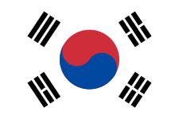

| Flagge |  |
|---|---|
| Hauptstadt | Seoul |
| Einwohnerzahl | 51.700.000 |
| Fläche | 100.210 km² |
Die Republik Korea meist Südkorea genannt, liegt in Ostasien und nimmt den südlichen Teil der Koreanischen Halbinsel ein. Als einzige Landgrenze, mit 243 km Länge, besteht faktisch nur die Grenze zum nördlichen Nachbarn Nordkorea. Die beiden Nachfolgestaaten Chōsens wurden 1948 im aufkommenden Kalten Krieg gegründet; der folgende Koreakrieg zementierte die Teilung Koreas. Der Norden wurde sozialistisch und autokratisch, während im kapitalistischen, diplomatisch nach Westen orientierten Südkorea mit der Zeit eine parlamentarische Demokratie etabliert werden konnte. Im Westen grenzt Südkorea an das Gelbe (in Südkorea: Westmeer), im Süden an das Ostchinesische und im Osten an das Japanische Meer (in Südkorea: Ostmeer).
Mit rund 51,7 Millionen Einwohnern zählt Südkorea zu den 30 bevölkerungsreichsten Staaten der Erde und mit über 500 Einwohnern pro Km² zu den dicht besiedelten Staaten. Etwa die Hälfte der Einwohner lebt im Großraum der Hauptstadt Seoul, einer Weltstadt mit der viertgrößten Wirtschaft weltweit. Über zwei Millionen Menschen leben jeweils in den Städten Busan, Incheon und Daegu. „Das Wunder am Han-Fluss“, wie die Zeit des rapiden Wirtschaftsaufschwungs ab 1962 genannt wird, machte Südkorea schnell von einem armen Agrarland zu einem modernen Industriestaat. Man spricht auch von einem Tigerstaat. In der Produktion von Schiffen und elektronischen Produkten wie Halbleitern, Mikrochips, Flachbildschirmen und Computern hat die südkoreanische Industrie eine marktbeherrschende Stellung erreicht. Auch dadurch nimmt die kulturelle Bedeutung des Landes zu, was etwa in der Koreanischen Welle Ausdruck findet. Das Land ist Mitgliedsstaat der Vereinten Nationen, der G20, der OECD, der APEC und ASEAN+3.
Der offizielle deutsche Staatsname lautet Republik Korea; umgangssprachlich spricht man jedoch meist von Südkorea. Auf Koreanisch heißt das Land offiziell Daehan Minguk (대한민국, 大韓民國; dt. „Republik Groß-Korea“). Allgemein wird es in Südkorea in seiner Kurzform Hanguk (한국, 韓國, „Staat Korea“) oder Namhan (남한, 南韓, „Südkorea“) genannt, in Abgrenzung zu Bukhan (북한, 北韓, „Nordkorea“). Da in Nordkorea „Korea“ nicht als Han, sondern als Chosŏn bezeichnet wird, heißt „Südkorea“ dort entsprechend Nam-Chosŏn (남조선, 南朝鮮).
Das Wort Han (한, 韓) geht auf den historischen Reichsbund Samhan (삼한, 三韓; „Drei Koreas“) zurück, der aus den Reichen Mahan, Jinhan und Byeonhan gebildet war und im Zeitraum vom ersten bis vierten Jahrhundert n. Chr. bestand. Dieser Name wurde in der Bezeichnung des im Jahr 1897 gegründeten Kaiserreichs Daehan Jeguk (Kaiserreich Groß-Korea) wieder aufgegriffen.
Der Name in den westlichen Sprachen hat seinen Ursprung in Cauly, wie Marco Polo die Halbinsel während seiner Reisen im späten 13. Jahrhundert nannte. Dies beruht vermutlich auf der chinesischen Aussprache des koreanischen Königreichs Goryeo (chinesisch Gāolì). In europäischen Aufzeichnungen tauchen bis ins 20. Jahrhundert hinein die beiden Schreibweisen Corea und Korea auf. Im englischen und deutschen Sprachraum setzte sich schließlich die Schreibweise mit K, in romanischen Sprachen die Schreibung mit C durch.